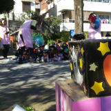
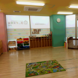
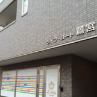

小規模認可保育園
小規模認可保育園は「子ども子育て支援制度」により平成27年4月から本格的にスタートしました。アピカルでは、市町村が窓口になり
認可を受けた19人までの定員の“小規模保育事業”を展開しています。ご利用は0～２歳児までですが、小規模ならではの家庭的な、き
め細かい保育が可能です。
利用の流れ
1
市町村に「保育の必要性」の認定を申請します
利用希望の申込みも同時にできます。
2
市町村から認定証が交付されます
2号認定・3号認定
3
保育所等の利用希望の申込みをします
希望する施設名などを記載
4
利用調整
保育を必要とするお子さん（2号、3号認定）の場合、必要に応じ、
市町村が利用可能な保育所等のあっせんなどもします。
5
利用先の決定後、契約となります
3つの認定区分
新制度ではお住まいの市町村による3つの区分の認定に応じて利用先が決まります。小規模保育園は地域型の3号認定となります。
1号認定
教育標準時間認定
お子さんが満3歳以上で、幼稚園等での教育を希望される場合
利用先：幼稚園、認定こども園
2号認定
満3歳以上・保育認定
お子さんが満3歳以上で、「保育の必要な事由」に該当し、保健所等での保育を希望される場合
利用先：保育所、認定こども園
3号認定
満3歳未満・保育認定
お子さんが満3歳未満で、「保育の必要な事由」に該当し、保健所等での保育を希望される場合
利用先：保育所、認定こども園、地域型保育

新制度の利用にかかる保育料は、保護者の所得に応じた支払いが基本となります。
新制度の様々な支援にかかる保育料の額は、現行の負担水準や保護者の所得に応じて、国が今後定める基準を上限として、市町村が地域
の実際の状況に応じて定めることになります。
契約・支払先は、利用する施設によって異なります。
地域型保育を利用する場合、利用者は施設・事業者と契約し、保育料を施設・事業者へ支払います。
施設について

あーす保育園
中野坂上
所在地東京都中野区
開 設平成27年4月
体 制基本時間７名体制

あーす保育園
戸塚
所在地横浜市戸塚区
開 設平成27年4月
体 制基本時間７名体制

あーす保育園
鷺ノ宮
所在地東京都中野区
開 設平成28年4月
体 制基本時間７名体制